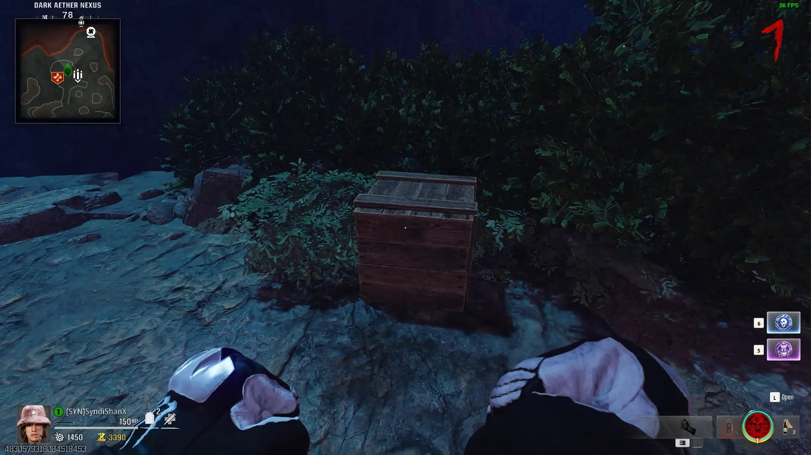
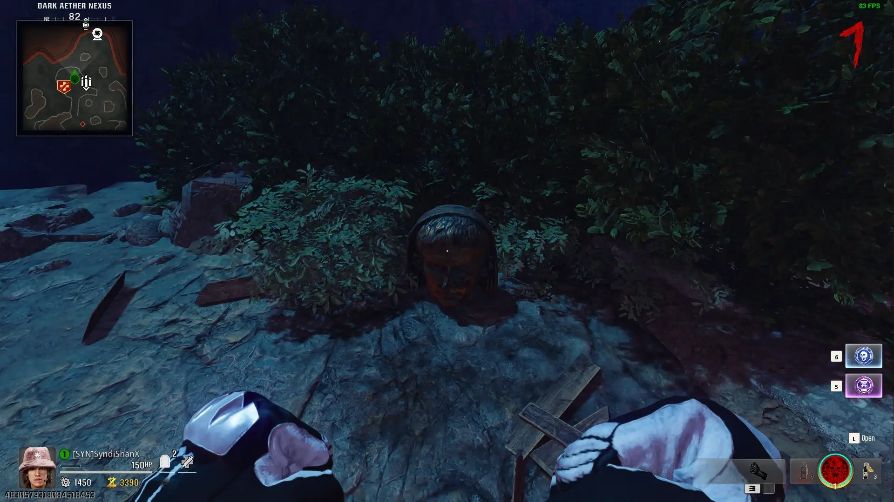
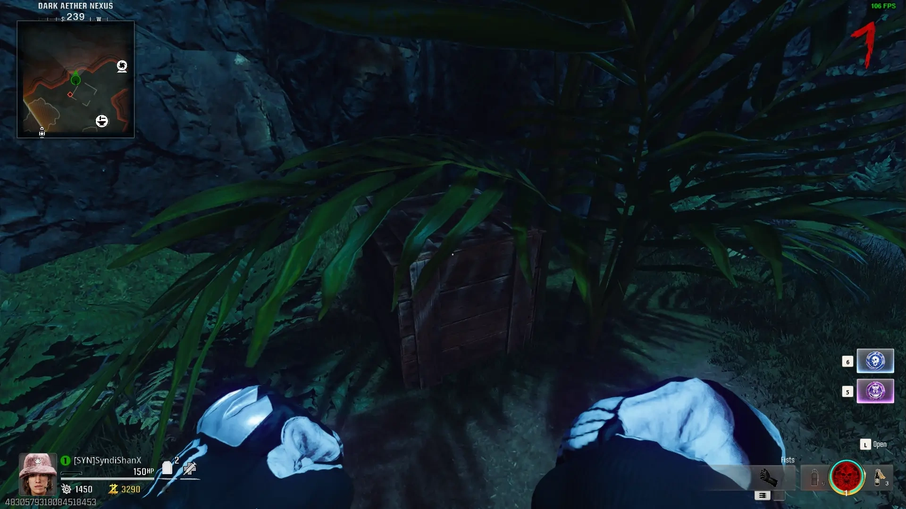
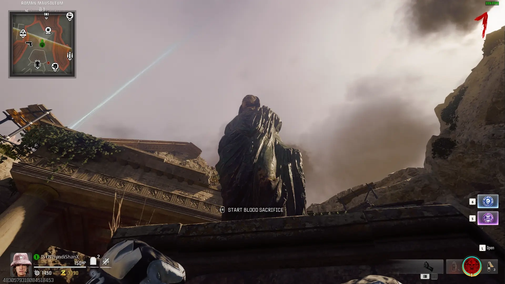
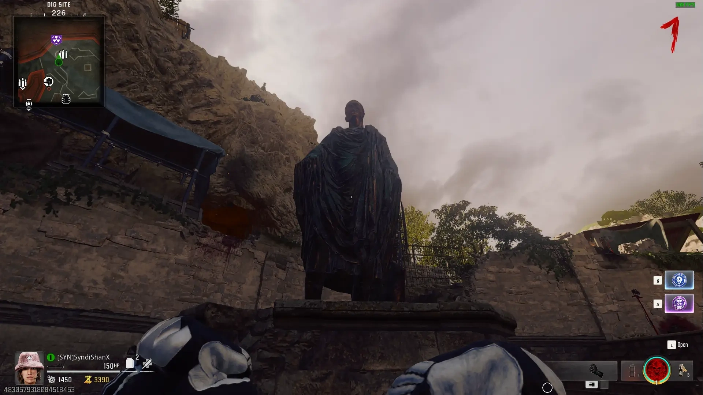
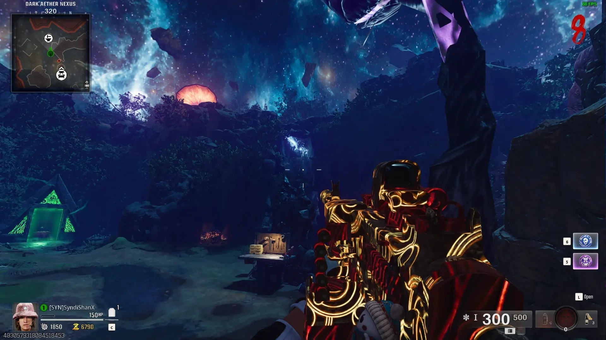
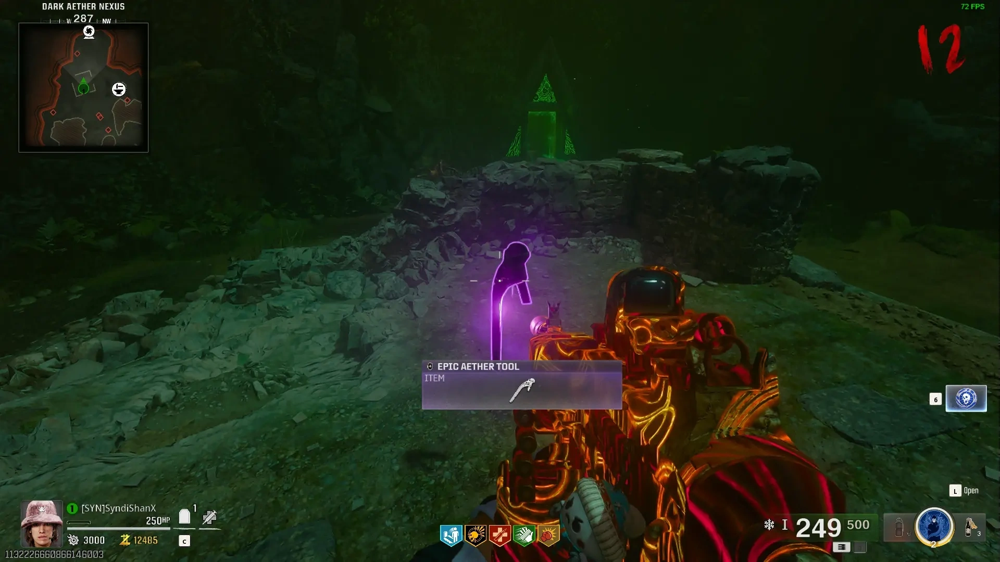

Easter Egg Songs
Interact with 3 Bunny Headphones


Free Powerups
Shoot Powerup Items around the Map


After Shooting all of the Other Powerups a Fire Sale Powerup will Spawn

Free Perk
Go to the Ossuary and Light the 6 lamps around the Room with Napalm Burst or Molotovs to Spawn the Random Perk


Free Full Power
Shoot the 2 Generators in the Dig Site with Dead Wire to Spawn a Full Power, Points, and Armor Plates on the Fallen Column
Golden Armor
Break 2 Boxes in the Dark Aether Nexus using Melee, and Pick up the Heads
Place the Heads on the Statues in the Excavation Site, then activate one of the Statues to Start the First Blood Ritual
Kill the 3 Elite Doppleghasts that Spawn to Complete the First Ritual
Activate the other Statue to Start the Second Blood Ritual
Kill the 3 Elite Shock Mimics that Spawn to Complete the Second Ritual
The Statues will Shoot beams into the Oxes and Spawn the Free Gold Armor Wallbuy
  
 
Free Brain Rot
Go to The Tombs and Shoot the Fallen Statue to Start Playing Simon Says with the Statues
Shoot them in the Correct Order once the Last One Lights up to Spawn the Brain Rot Ammo Mods and other Loot
Free Light Mend and Self Revive
Shoot 10 Vases around the Map


Once you Break the Last Vase Free Self Revives and Light Mend Ammo Mods will Spawn
Free Raw Aetherium Crystal and Cryofreeze Ammo Mod
Shoot the Rock that has Electricity on it in the Sky in the Dark Aether Nexus
Shoot all the Oribiting Rocks quickly to Freeze them
Once you freeze all of the Oribiting Rocks the Raw Aetherium Crystal and Cryofreeze Ammo Mods will Spawn at the Altar
Free Aether Tool
Shoot the 2 Waterfalls in the Dark Aether Nexus to Freeze them with Cryofreeze or the Staff of Ice
An Aether Tool will Spawn at the Ruins by the Green Portal
Round 1-10: Rare Aether Tool
Round 11-20: Epic Aether Tool
Round 21+: Legendary Aether Tool
 
Free Ray Gun
Pick Up a Shovel around the Map, and buy Death Perception
Interact with the Dig Sites until you find 3 Ancient Gems
Place the Ancient Gems on the Statue next to the Ox Mural in the Tombs, the Kill the Doppleghasts to Obtain the Ray Gun and some Points


Staff of Ice
Kill a Shock Mimic and Grab the Monocle
Shoot the Aetheric Lanterns in the Tombs until it's in front of the Ox Mural to Light up the Symbols on the Wall
Shoot the Roman Numerals in Order from 1 to 8 to Start the Lockdown
Follow the Orb and Kill all of the Enemies that Spawn to Complete the Lockdown and Pick up the Staff Base

Shoot the Aetheric Lanterns in the Ossuary until it's in front of the Roman Mural to Light up the Symbols on the Wall
Shoot the Roman Numerals in Order from 1 to 10 to Start the Lockdown
Follow the Orb and Kill all of the Enemies that Spawn to Complete the Lockdown and Pick up the Staff Head

Go to the Dark Aether Nexus, Place the Staff Parts on Wall in the Middle of the Altar, then Interact with them to Start a Lockdown
Protect the Staff until, it's Constructed, then Pick it Up
Ull's Arrow Upgrade
Freeze 3 purple Aetheric Lanterns in 10 Seconds using the Staff of Ice, a Quote about Extinguishing Flames will Play if you did it Fast Enough
Go to the Dark Aether Nexus and Shoot the 3 Purple Symbols on Floating Rocks with the Staff of Ice to Lower the Rock
One of the Portals will close itself Go to that Portal in the Overworld and Shoot the Symbols that were on the Rocks to open the Portal
A Symbol will Spawn on the Ground in front of the Portal if you Shot the Correct Symbols, if there isn't a Symbol, then you will Fall to your Death
Enter the Portal and Interact with the Purple Orb to Start a Soul Box, All Players need to follow the Orb or it will Fail and You'll have to Enter the Symbols again Next Round
Follow the Orb until it Enters the Altar, then you can Interact with it to Upgrade your Staff of Ice into Ull's Arrow
Main Quest
Open the Portal to the Dark Aether Nexus
Obtain Ull's Arrow, then Complete the Challenges
Vermin Challenge
Shoot the Crystal on the Vermin Statue in the Dark Aether Nexus with the Healing End of the Ice Staff, then Interact with it
Go to the Dig Site and Interact with the Vermin Statue to start a Lockdown, Kill the Vermin to Complete the Lockdown
Pick up the Orb and Place it on the Vermin Statue in the Dark Aether Nexus without getting Hit too Many Times
Parasite Challenge
Shoot the Crystal on the Parasite Statue in the Dark Aether Nexus with the Healing End of the Ice Staff, then Interact with it
Go to the Shrine of the Hierophants and Interact with the Parasite Statue to start a Lockdown, Kill the Parasites and Insert the Energy Orbs into the Statue to Complete the Lockdown
Pick up the Orb and Place it on the Parasite Statue in the Dark Aether Nexus without getting Hit too Many Times
Doppleghast Challenge
Shoot the Crystal on the Doppleghast Statue in the Dark Aether Nexus with the Healing End of the Ice Staff, then Interact with it
Go to the Ossuary and Interact with the Doppleghast Statue to start a Lockdown, Kill the Doppleghasts to Complete the Lockdown
Pick up the Orb and Place it on the Doppleghast Statue in the Dark Aether Nexus without getting Hit too Many Times
Amalgam Challenge
Shoot the Crystal on the Amalgam Statue in the Dark Aether Nexus with the Healing End of the Ice Staff, then Interact with it
Go to Deep Excavation and Interact with the Amalgam Statue to start a Lockdown, Kill the Elite Amalgam to Complete the Lockdown (Kill the Tethered Zombies if the Amalgam gets Shielded)
Pick up the Orb and Place it on the Amalgam Statue in the Dark Aether Nexus without getting Hit too Many Times
**PREPARE FOR THE BOSS FIGHT -- YOU NEED A STRONG BULLET WEAPON**
The Statues will Shoot Beams into the Large Crystal in the Sky that will Power the Bridge, Interact with the Altar in front of the Bridge to Construct it
Interact with the Sentinal Artifact to Start the Boss Fight
Shoot the Artifact once it turns Purple until it Breaks before the Orb reaches the Statue, if you don't break it in time, the Orb will Spawn Enemies based on the Statue
Once you Break the Sentinal Artifact, it will Split into 2 Copies, and those will Split into 4 Copies
Once you have 4 Sentinal Artifacts, Kill the Elite Zombie with an Orange Artifact Attached to it, then Break the Sentinal Artifact it Drops
Once you Break the Sentinal Artifact, Kill the different Elites will Spawn with White Artifacts, then Break the Sentinal Artifacts they Drop
After you Kill them, the Artifacts will Start Spinning and Go into the Wall, Break it as Fast as Possible before it Completes its Wipe Attack
Pick up the Sentinal Artifact to Trigger the Cutscene